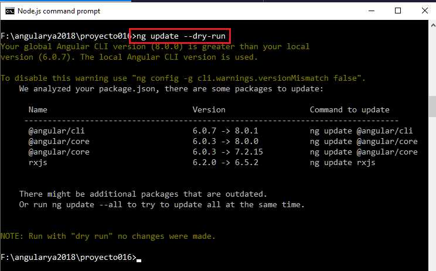
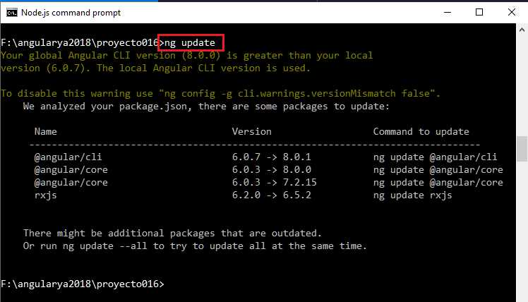
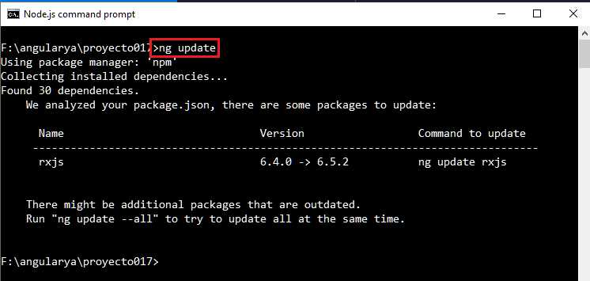
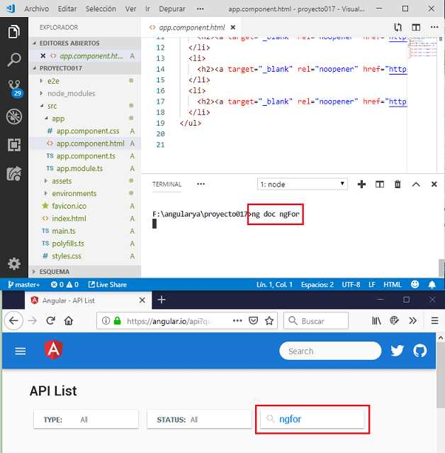
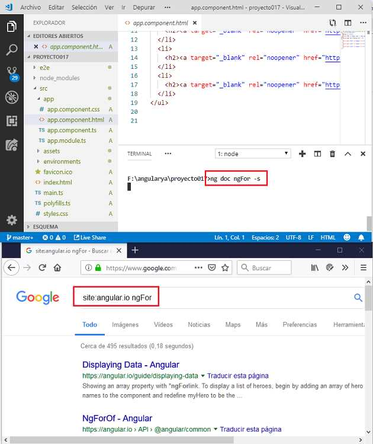

El proyecto de Angular tiene un camino de desarrollo con actualizaciones semestrales. En noviembre de 2021 la última versión estable es la 13.
Angular CLI provee un comando que nos permite actualizar nuestro proyecto a la última versión estable de Angular. Debemos ejecutar el comando 'update' en la carpeta donde se encuentra el proyecto a migrar.
Podemos ejecutar este comando primero con la opción 'dry-run' para tener una idea de los cambios que se producirán y si nos conviene en nuestro caso:
ng update --dry-run
Si ejecutamos este comando en un proyecto desarrollado con Angular 6 tenemos como resultado:
Nos informa los cambios que hay que hacer.
Para efectuar los cambios debemos efectivamente ejecutar el comando 'update' sin la opción 'dry-run':
Si ejecutamos el comando 'update' sobre un proyecto que coincide con la versión actual:
Este comando abre la documentación oficial de Angular API para una palabra clave que le pasemos:
ng doc ngFor
Luego de esto se abre el navegador que tengamos configurado por defecto y nos muestra:
El comando 'doc' tiene una opción --search (alias: -s), esta nos permite hacer una búsqueda en todo el sitio 'angular.io':
ng doc ngFor -s
Tenemos como resultado:
